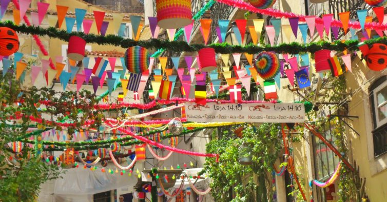
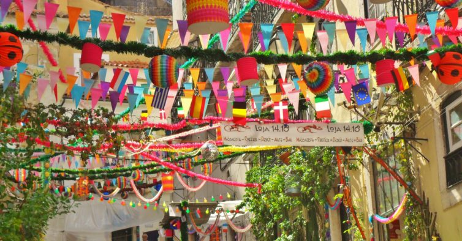

Bem-vindo ao Sardial!
O melhor arraial dos Santos Populares com sardinhas, música, humor e diversão!
------------------------------------
O melhor arraial dos Santos Populares com sardinhas, música, humor e diversão!
------------------------------------
Queres saber mais sobre o melhor arraial deste verão? Sabe mais sobre os nossos serviços, usando a barra de menu ou na nossa APLICAÇÃO!
Carrega nos nomes para seres direcionado para o site do respectivo parceiro ou patrocinador! EPCI CABRIZ SuperBock Gallo Coca Cola Sumol Compal Penacova M80
------------------------------------